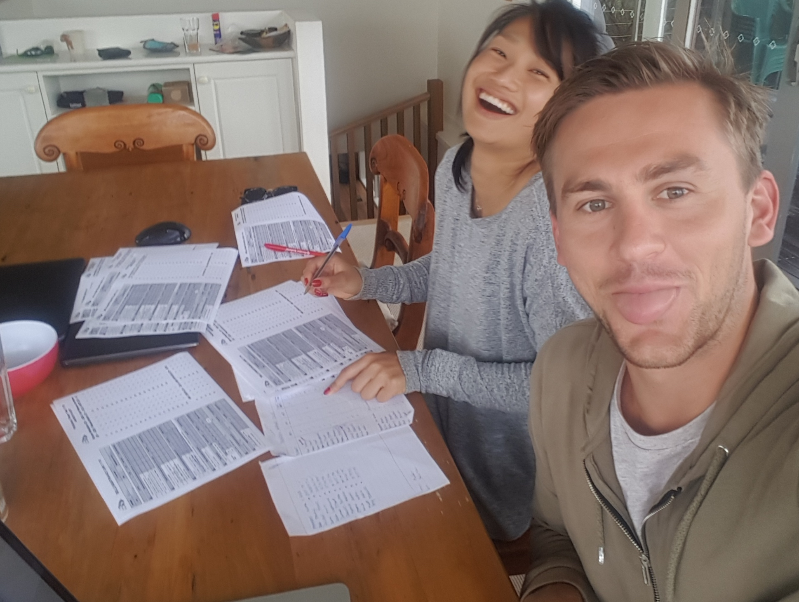
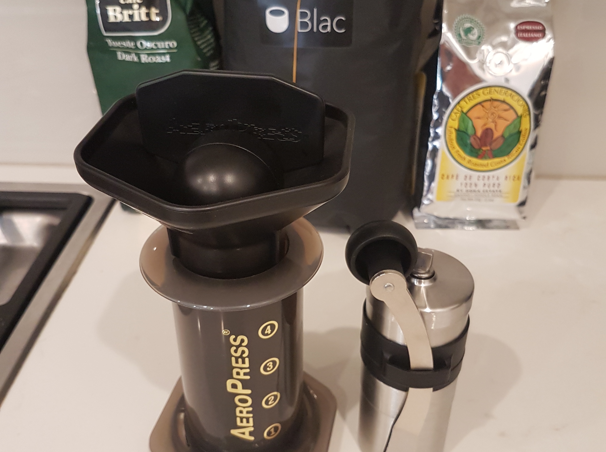

Hi üòÄ
I am a Software Engineering student at the University of Melbourne, completing my final year of Masters.
When I'm not studying 📖, you'll find me playing water polo 🤽, paddling my surf ski 🛶, helping out at my lifesaving club 🌊 or working on my own little projects 🛠.
Being so heavily involved in a volunteer organisation, I'm quite passionate about using or building technology to remove manual or paper-based processes.
Throughout my teen years, I played high-level water polo and represented Australia. I attribute my ability to work hard (and get up early) to water polo.
I was into the sciences at school. I ended up doing a Commerce degree, and whilst this has helped my understanding of business, after a year in corporate finance I decided to make a change. I found software and computer science and haven't looked back 😎
I think it is important to reason from first principles rather than by analogy. The normal way we conduct our lives is we reason by analogy... First principles is kind of a physics way of looking at the world. You boil things down to the most fundamental truths and say, “What are we sure is true?” … and then reason up from there. - Elon Musk
There is no passion to be found in playing small - in settling for a life that is less than the one you are capable of living. - Nelson Mandela
While you're out there partying, horsing around, someone out there at the same time is working hard. Someone is getting smarter and someone is winning. Just remember that. - Arnold Schwarzenegger
{
"youtube": "Computerphile",
"footwear": "Tan Crocs",
"beer": "Schofferhoffer",
"beverage": "Thai Iced Coffee",
"odd_activity": "Taking photos of my laptop and a beer with a nice view",
"hackathon": "CodeBrew",
"language": "Haskell",
"coffee": "Anything from an Aeropress"
}